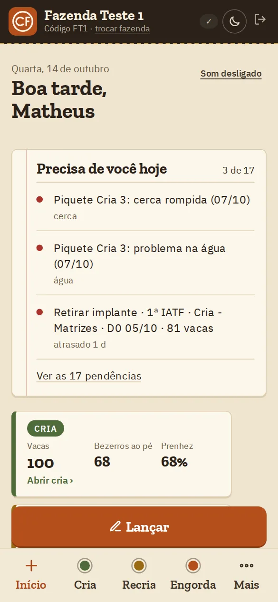
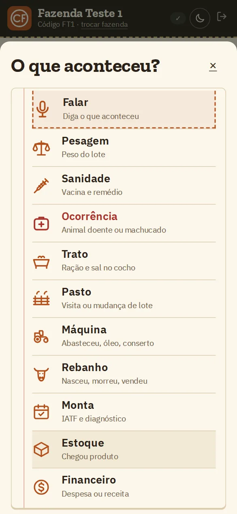
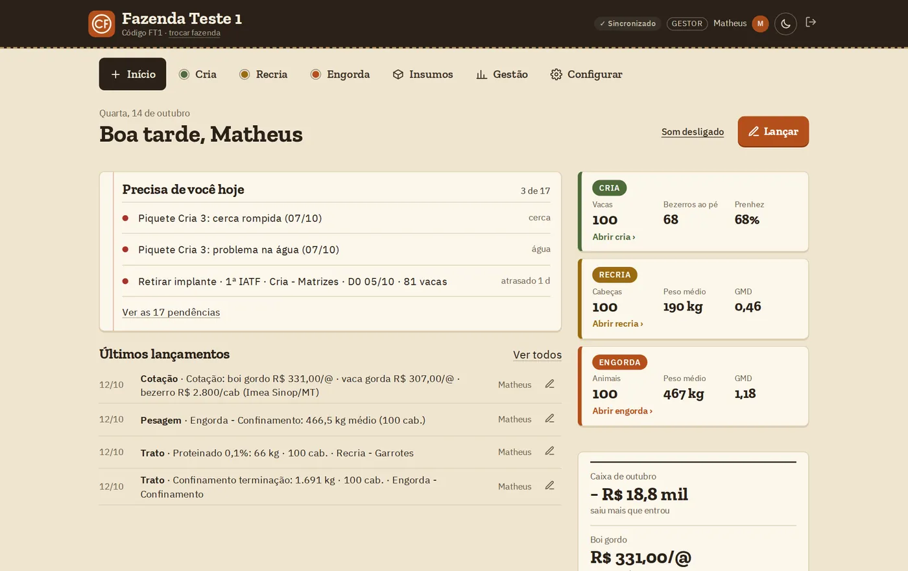
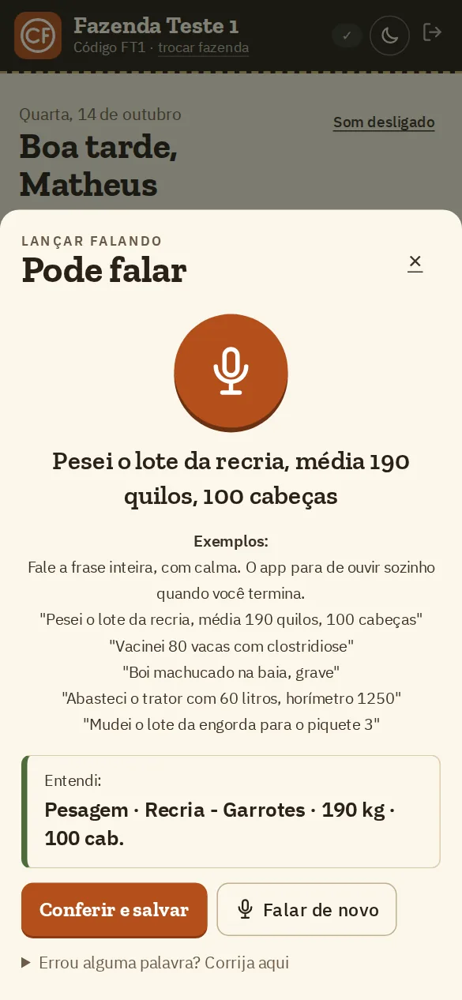
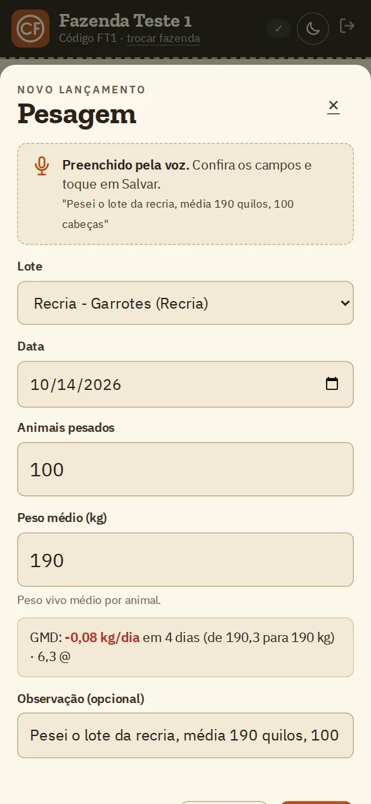
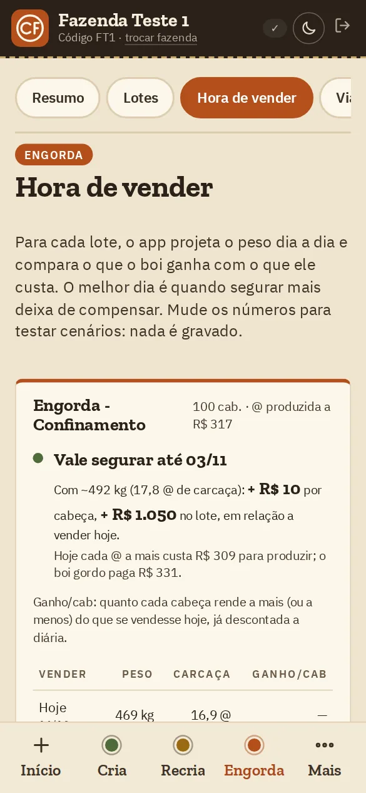
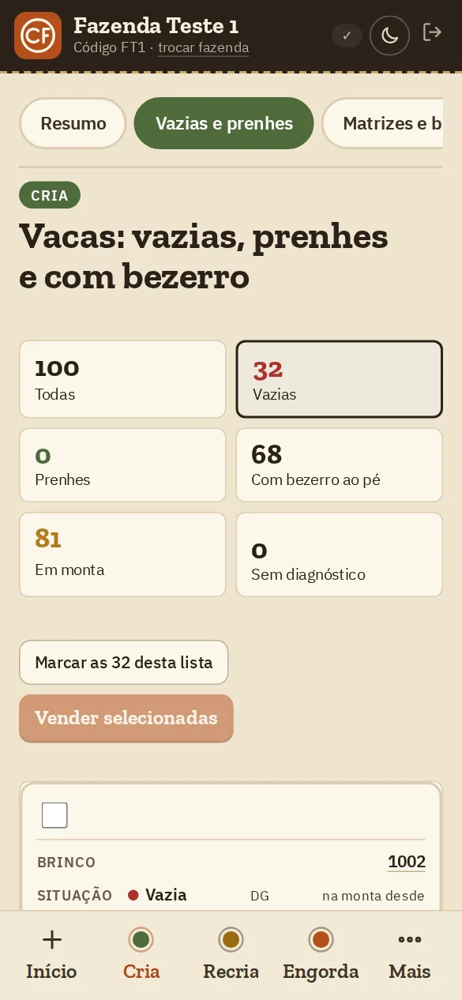
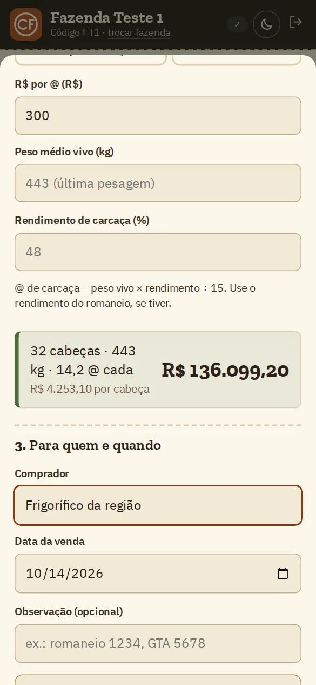
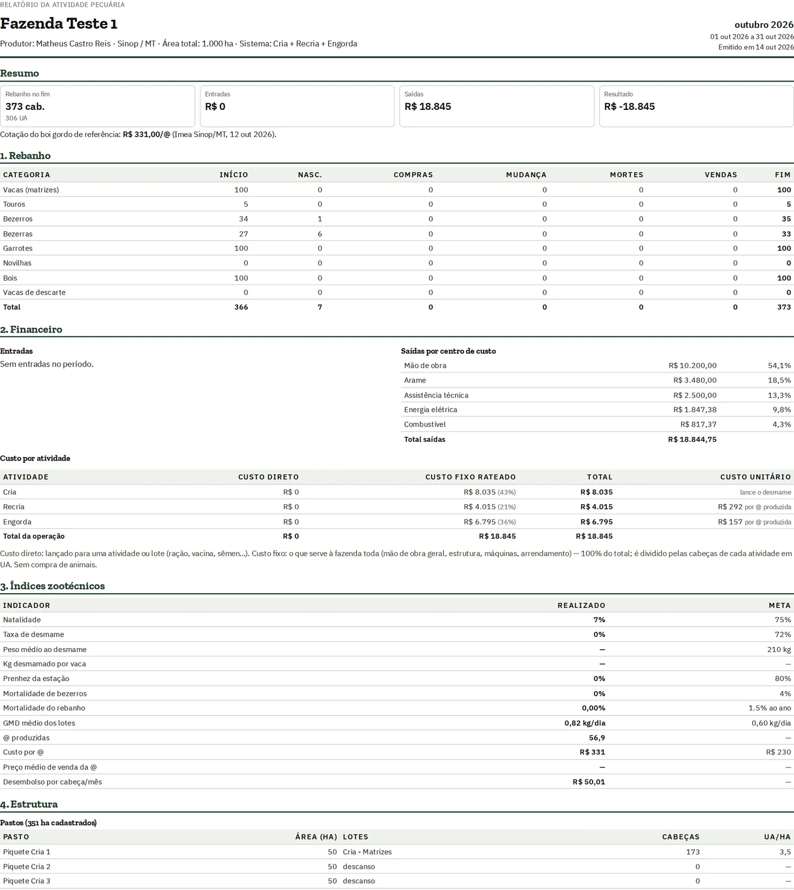
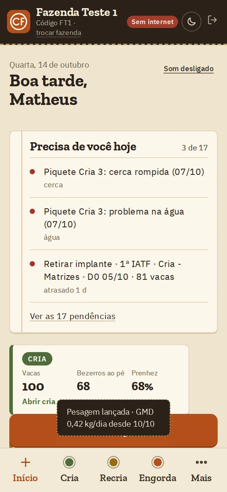

Matrizes e bezerros
Monta e IATF com agenda de cada etapa, partos previstos, vacas vazias e prenhes vaca por vaca, ficha de cada animal e os índices de prenhez, desmame e custo do bezerro.
O caderno de campo da sua fazenda, no celular. A equipe anota o que aconteceu, o app faz as contas e você acompanha tudo de longe, mesmo sem internet no pasto.

Molha, rasga, fica no bolso de quem foi embora. E a anotação vai junto.
Alguém precisa passar tudo a limpo à noite, e ninguém passa.
O sistema não abre, a pessoa deixa para depois e esquece.
É a vacina que passou da data, o sal que acabou, a vaca vazia que ninguém viu, o boi vendido na semana errada.
Toca em “O que aconteceu?” e escolhe: pesagem, trato, vacina, nascimento, ocorrência. Dá até para falar em vez de digitar.
Baixa o estoque, calcula ganho de peso, custo, carência e quanto vale o lote.
Uma lista só com o que precisa de atenção: vacina para reforçar, estoque acabando, lote no ponto de venda, conta vencendo.

Monta e IATF com agenda de cada etapa, partos previstos, vacas vazias e prenhes vaca por vaca, ficha de cada animal e os índices de prenhez, desmame e custo do bezerro.
Lotes com pesagem, ganho de peso por dia, arrobas produzidas e custo da arroba.
Trato do dia com quantos quilos de cada ingrediente vão no vagão, custo da dieta e o melhor dia para vender.
Mapa sobre foto de satélite, área calculada, descanso e aviso de lotação acima do limite.
Estoque que se calcula sozinho, quantos dias ainda dura, e o controle das máquinas (diesel, óleo, revisão).
Caixa do mês, custo por atividade, metas, comparação entre safras e relatório pronto para o banco.
Vê a fazenda inteira, aprova quem entra, vende animais e acompanha as contas.
Botões grandes e, se você quiser, só o que é do setor dele (cria, recria ou engorda). Lança e pronto.
Vacinas, tratamentos, carência, diagnóstico de prenhez e histórico de cada animal.
Só visualizam. Acompanham os números sem mexer em nada.
Convide a equipe por um link no WhatsApp. Você aprova quem entra.
No escritório, o gestor vê os avisos, os lotes e o caixa lado a lado. O que a equipe lança no campo aparece aqui.

Telas com dados de exemplo
A pessoa fala, o app preenche o formulário. Você confere e salva.
“Pesei o lote da recria, média 190 quilos, 100 cabeças.”


O app projeta o peso dia a dia e mostra o melhor dia para vender e quanto se ganha a mais por cabeça, já contando a carência.

Mostra vazias, prenhes, paridas e com bezerro ao pé, vaca por vaca (para quem cadastra a ficha das matrizes). Separe e venda direto da lista, com o total calculado na hora.


Desenhe os pastos sobre a foto de satélite e veja a área de cada um, onde está cada lote e quais estão em descanso.
Um PDF organizado para o crédito rural, com rebanho, entradas e saídas e custo por atividade, sem montar nada à mão.

Lance no pasto. O app guarda no celular e, quando pegar sinal, tudo sobe sozinho.
Selo “Sem internet” no topo da tela
Para lançar no campo, não. O app guarda tudo no celular e envia quando pegar sinal.
Só precisa de internet no primeiro acesso, para abrir o mapa dos pastos e, em alguns celulares, para lançar falando.
Funciona no iPhone (Safari), no Android (Chrome) e no computador.
Abra o link do app no celular. Não precisa de loja de aplicativos.
Só entra na fazenda quem você aprova, cada pessoa vê só o que o papel dela permite e é feita uma cópia de segurança toda semana. Seguimos a Lei Geral de Proteção de Dados (LGPD).
Não. Dá para importar sua planilha (Excel ou CSV) e a sessão da balança Tru-Test. Se algo vier errado, dá para desfazer.
Estamos em fase de testes com algumas fazendas. Fale com a gente para participar.
Estamos escolhendo algumas fazendas para usar a Caderneta e ajudar a melhorar o app. Chame no WhatsApp e conte como é a sua lida.